Change analysis for Ecuador for PRIMAP-hist v2.6.1_final compared to
v2.6_final
Overview over
emissions by sector and gas
The following figures show the aggregate national total emissions
excluding LULUCF AR6GWP100 for the country reported priority scenario.
The dotted linesshow the v2.6_final data.
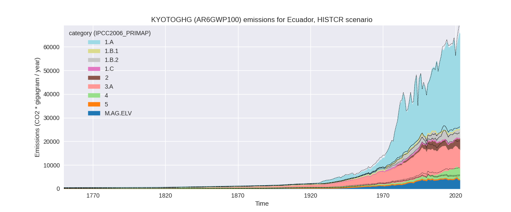
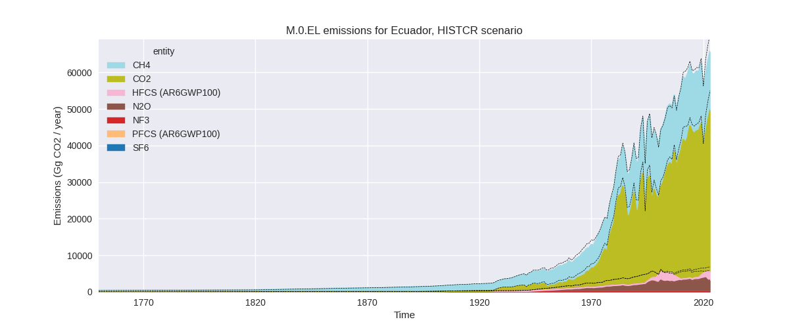
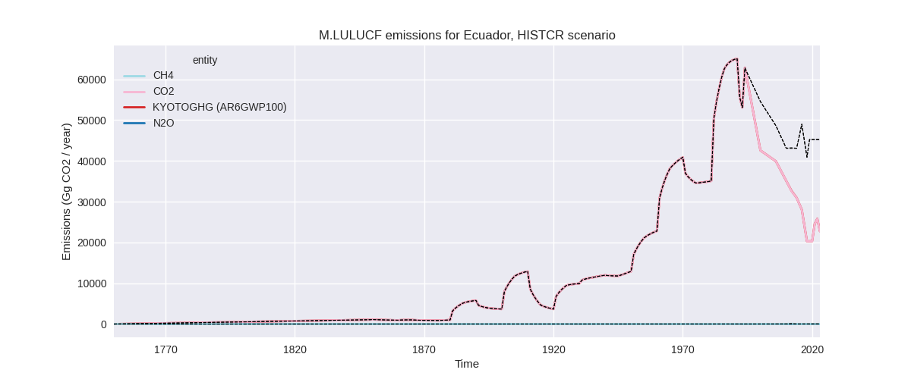
The following figures show the aggregate national total emissions
excluding LULUCF AR6GWP100 for the third party priority scenario. The
dotted linesshow the v2.6_final data.
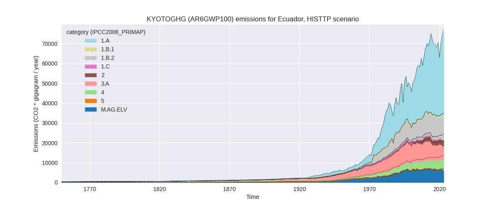
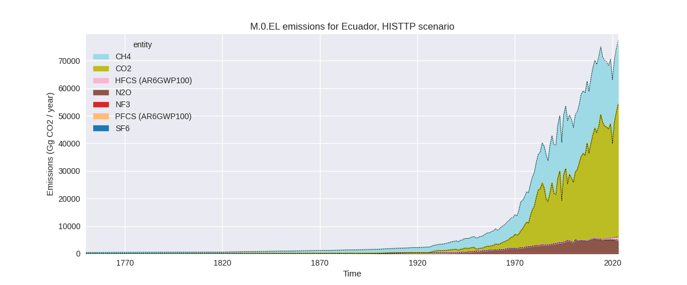
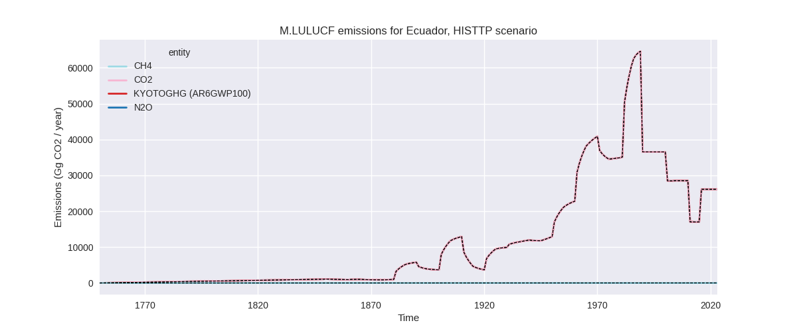
Overview over changes
In the country reported priority scenario we have the following
changes for aggregate Kyoto GHG and national total emissions excluding
LULUCF (M.0.EL):
- Emissions in 2023 have changed by -6.7%% (-4746.52 Gg CO2 / year)
- Emissions in 1990-2023 have changed by -1.9%% (-995.02 Gg CO2 / year)
In the third party priority scenario we have the following changes
for aggregate Kyoto GHG and national total emissions excluding LULUCF
(M.0.EL):
- Emissions in 2023 have changed by -2.0%% (-1551.94 Gg CO2 / year)
- Emissions in 1990-2023 have changed by -0.9%% (-548.04 Gg CO2 / year)
Most
important changes per scenario and time frame
In the country reported priority scenario the
following sector-gas combinations have the highest absolute impact on
national total KyotoGHG (AR6GWP100) emissions in 2023
(top 5):
- 1: 1.A, CO2 with -3786.87 Gg CO2 / year (-8.7%)
- 2: 3.A, CH4 with -3479.32 Gg CO2 / year (-31.1%)
- 3: M.AG.ELV, N2O with -2210.11 Gg CO2 / year (-48.4%)
- 4: 4, CH4 with 1833.17 Gg CO2 / year (65.7%)
- 5: 1.B.2, CH4 with 1722.86 Gg CO2 / year (297.8%)
In the country reported priority scenario the
following sector-gas combinations have the highest absolute impact on
national total KyotoGHG (AR6GWP100) emissions in
1990-2023 (top 5):
- 1: M.AG.ELV, N2O with -2089.43 Gg CO2 / year (-48.0%)
- 2: 1.B.2, CH4 with 1779.93 Gg CO2 / year (301.6%)
- 3: 3.A, CH4 with -1442.07 Gg CO2 / year (-12.7%)
- 4: 2, HFCS (AR6GWP100) with 761.92 Gg CO2 / year (225.5%)
- 5: M.AG.ELV, CH4 with 689.94 Gg CO2 / year (114.6%)
In the third party priority scenario the following
sector-gas combinations have the highest absolute impact on national
total KyotoGHG (AR6GWP100) emissions in 2023 (top
5):
- 1: 4, CH4 with -1933.17 Gg CO2 / year (-30.5%)
- 2: 1.B.2, CH4 with 1185.99 Gg CO2 / year (17.1%)
- 3: 3.A, CH4 with -491.46 Gg CO2 / year (-6.7%)
- 4: 1.B.2, CO2 with 450.04 Gg CO2 / year (12.8%)
- 5: M.AG.ELV, N2O with -423.97 Gg CO2 / year (-10.9%)
In the third party priority scenario the following
sector-gas combinations have the highest absolute impact on national
total KyotoGHG (AR6GWP100) emissions in 1990-2023 (top
5):
- 1: 4, CH4 with -1500.88 Gg CO2 / year (-30.7%)
- 2: 1.B.2, CH4 with 929.66 Gg CO2 / year (14.1%)
- 3: 1.B.2, CO2 with 60.34 Gg CO2 / year (2.1%)
- 4: 2, CO2 with 55.89 Gg CO2 / year (3.1%)
- 5: M.AG.ELV, N2O with -28.53 Gg CO2 / year (-0.8%)
Notes on data changes
Here we list notes explaining important emissions changes for the
country.
- CRT data from BTR1 covering 1994, 2000, 2006, 2010, 2012, 2014,
2016, 2018, and 2020-2022 has been included. Is replaces and extends NIR
data. The new country reported data is lower in total.
- Cumulative emissions in the CR scenario are lower in the
agricultural sector and higher for fugitive and f-gas emissions. 2023
emissions are lower in total with an additional contribution from energy
CO2 where CRT data is lower than EI for the latest years.
- Cumulative emissions in the TP scenario are lower as well. The main
influence is waste CH4 which is partly offset by higher fugitive CH4 in
1.B.2. Both changes come directly from new EDGAR data. For 2023 we
additionally have lower agricultural emissions due to a decline in FAO
data for 2022 and higher fugitive CO2 (from EDGAR)
Changes by sector and gas
For each scenario and time frame the changes are displayed for all
individual sectors and all individual gases. In the sector plot we use
aggregate Kyoto GHGs in AR6GWP100. In the gas plot we usenational total
emissions without LULUCF.
country reported scenario
2023
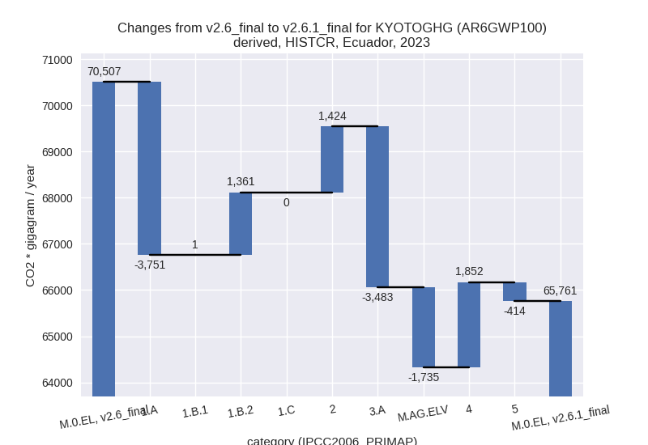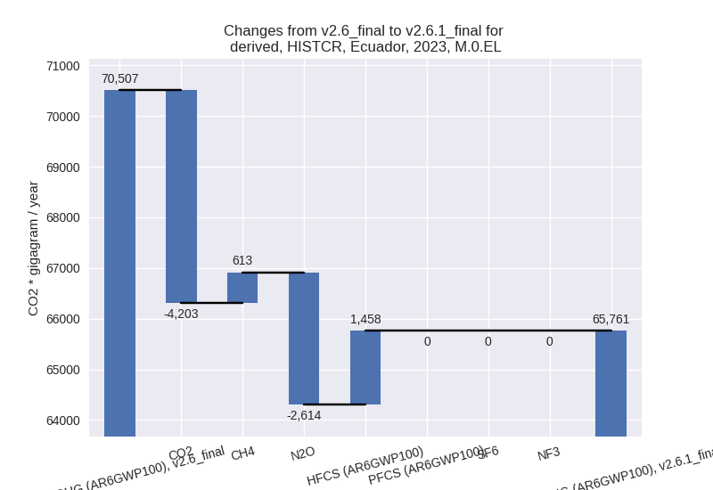
1990-2023
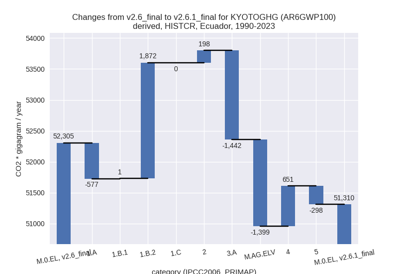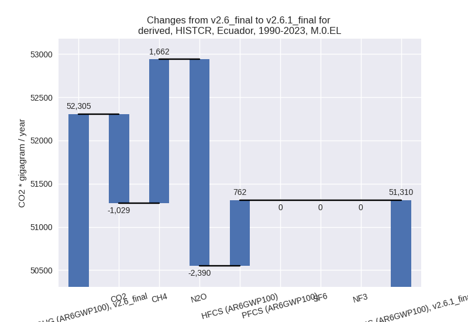
third party scenario
2023
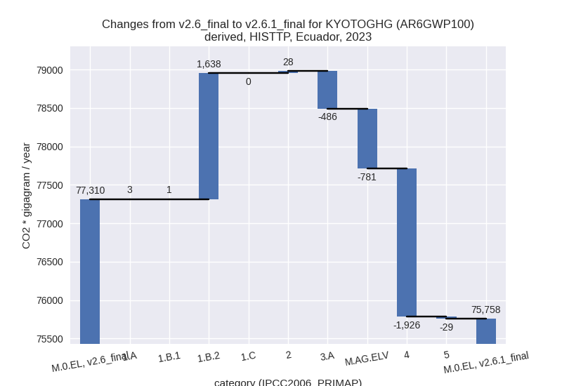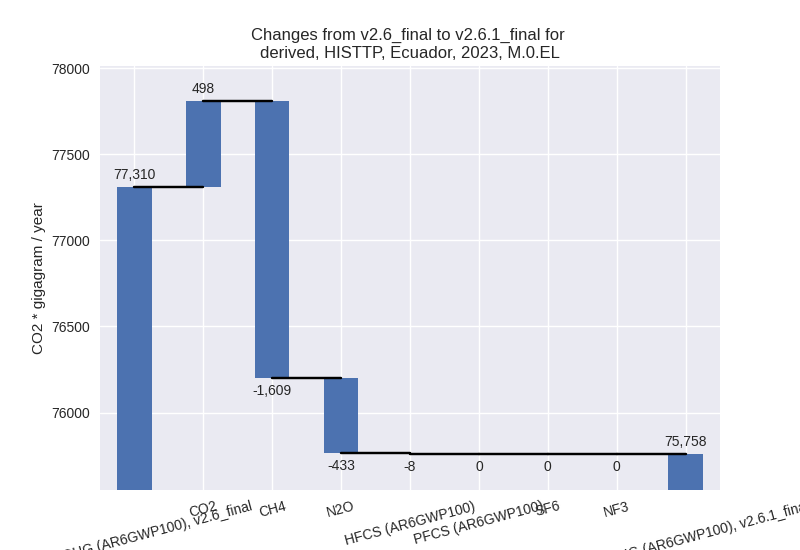
1990-2023
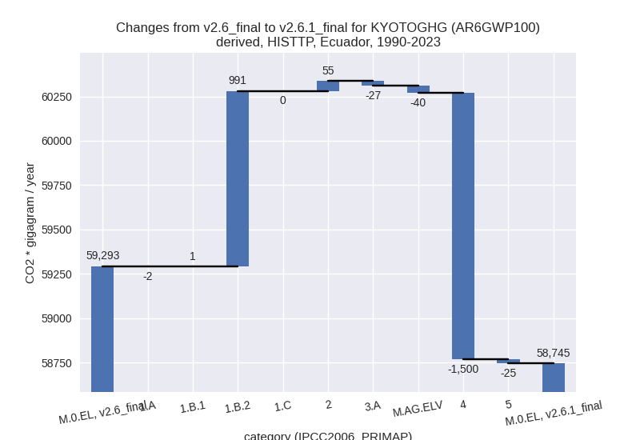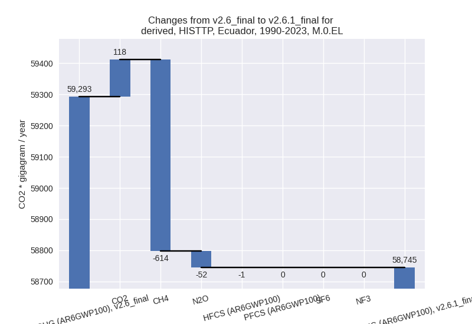
Detailed changes for the
scenarios:
country reported scenario
(HISTCR):
Most important changes
per time frame
For 2023 the following sector-gas combinations have
the highest absolute impact on national total KyotoGHG (AR6GWP100)
emissions in 2023 (top 5):
- 1: 1.A, CO2 with -3786.87 Gg CO2 / year (-8.7%)
- 2: 3.A, CH4 with -3479.32 Gg CO2 / year (-31.1%)
- 3: M.AG.ELV, N2O with -2210.11 Gg CO2 / year (-48.4%)
- 4: 4, CH4 with 1833.17 Gg CO2 / year (65.7%)
- 5: 1.B.2, CH4 with 1722.86 Gg CO2 / year (297.8%)
For 1990-2023 the following sector-gas combinations
have the highest absolute impact on national total KyotoGHG (AR6GWP100)
emissions in 1990-2023 (top 5):
- 1: M.AG.ELV, N2O with -2089.43 Gg CO2 / year (-48.0%)
- 2: 1.B.2, CH4 with 1779.93 Gg CO2 / year (301.6%)
- 3: 3.A, CH4 with -1442.07 Gg CO2 / year (-12.7%)
- 4: 2, HFCS (AR6GWP100) with 761.92 Gg CO2 / year (225.5%)
- 5: M.AG.ELV, CH4 with 689.94 Gg CO2 / year (114.6%)
Changes in the main sectors for aggregate KyotoGHG (AR6GWP100)
are
- 1: Total sectoral emissions in 2022 are 41675.73 Gg
CO2 / year which is 66.3% of M.0.EL emissions. 2023 Emissions have
changed by -5.1% (-2390.22 Gg CO2 /
year). 1990-2023 Emissions have changed by 4.2% (1295.09 Gg CO2 / year). For 2023 the
changes per gas
are:
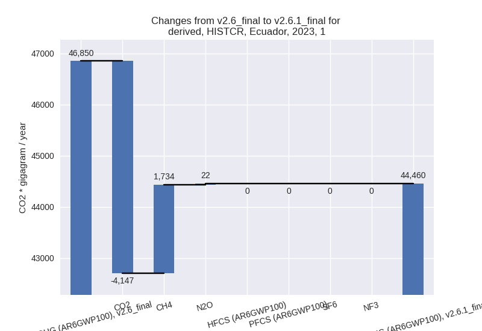
For 1990-2023 the changes per gas
are:
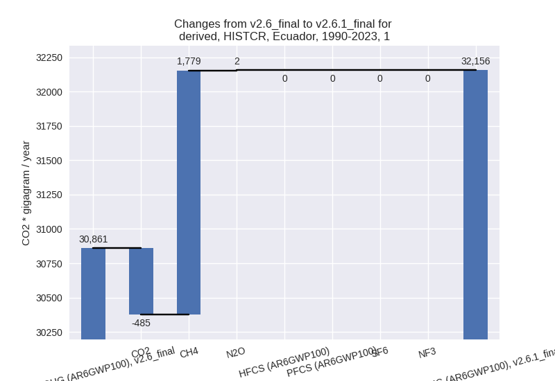
The changes come from the following subsectors:
- 1.A: Total sectoral emissions in 2022 are 38021.31
Gg CO2 / year which is 91.2% of category 1 emissions. 2023 Emissions
have changed by -8.5% (-3751.35 Gg
CO2 / year). 1990-2023 Emissions have changed by -2.0% (-577.41 Gg CO2 / year). For 2023
the changes per gas
are:
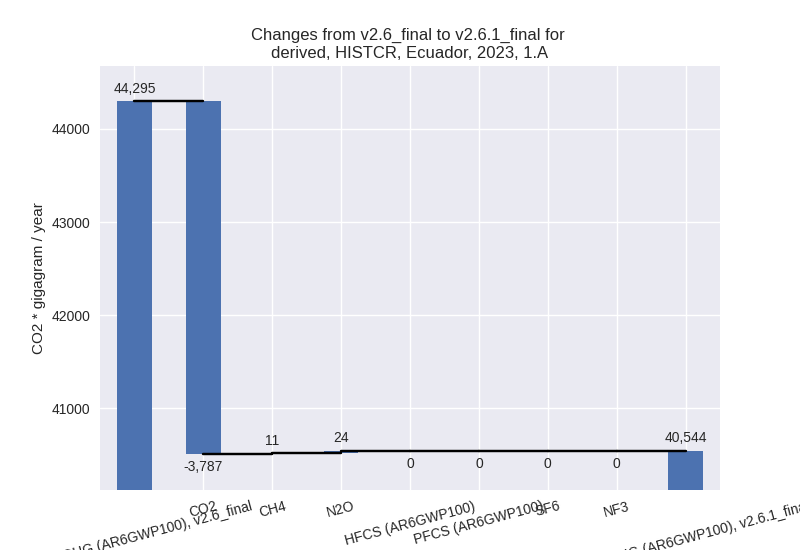
There is no subsector information available in PRIMAP-hist.
- 1.B.1: Total sectoral emissions in 2022 are 0.54 Gg
CO2 / year which is 0.0% of category 1 emissions. 2023 Emissions have
changed by inf% (0.54 Gg CO2 /
year). 1990-2023 Emissions have changed by inf% (0.54 Gg CO2 / year). For 2023 the
changes per gas
are:
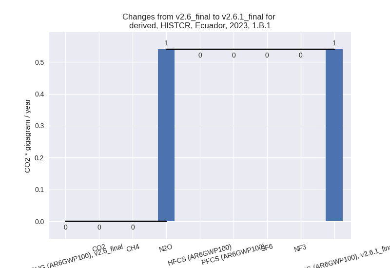
For 1990-2023 the changes per gas
are:
There is no subsector information available in PRIMAP-hist.
- 1.B.2: Total sectoral emissions in 2022 are 3653.89
Gg CO2 / year which is 8.8% of category 1 emissions. 2023 Emissions have
changed by 53.2% (1360.60 Gg CO2 /
year). 1990-2023 Emissions have changed by 104.2% (1871.96 Gg CO2 / year). For 2023
the changes per gas
are:
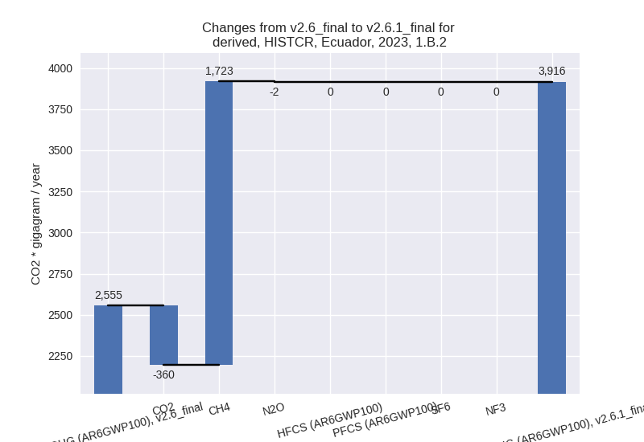
For 1990-2023 the changes per gas
are:
There is no subsector information available in PRIMAP-hist.
- 2: Total sectoral emissions in 2022 are 4615.46 Gg
CO2 / year which is 7.3% of M.0.EL emissions. 2023 Emissions have
changed by 42.4% (1423.64 Gg CO2 /
year). 1990-2023 Emissions have changed by 7.2% (198.23 Gg CO2 / year). For 2023 the
changes per gas
are:
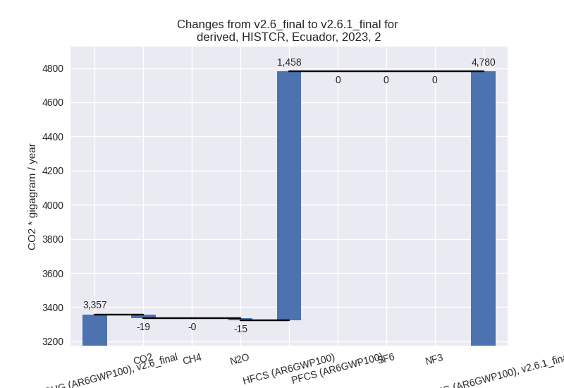
For 1990-2023 the changes per gas
are:
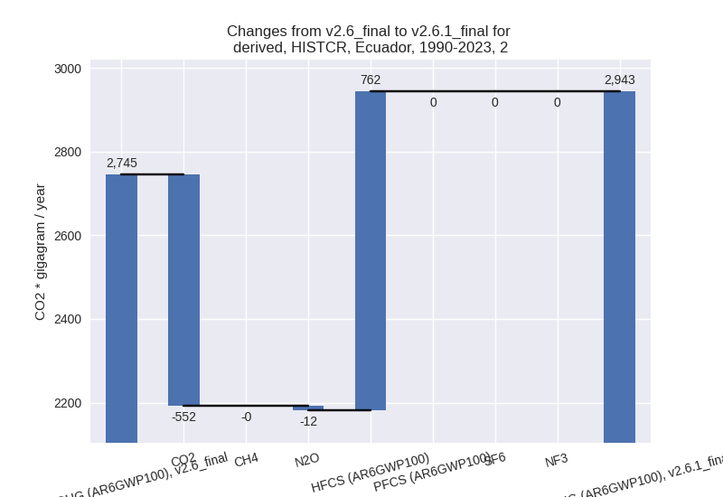
- M.AG: Total sectoral emissions in 2022 are 11772.54
Gg CO2 / year which is 18.7% of M.0.EL emissions. 2023 Emissions have
changed by -30.9% (-5217.78 Gg CO2 /
year). 1990-2023 Emissions have changed by -17.0% (-2840.98 Gg CO2 / year). For 2023
the changes per gas
are:
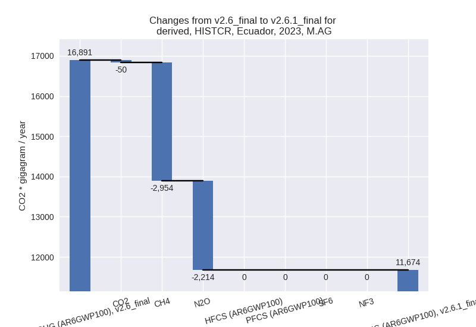
For 1990-2023 the changes per gas
are:
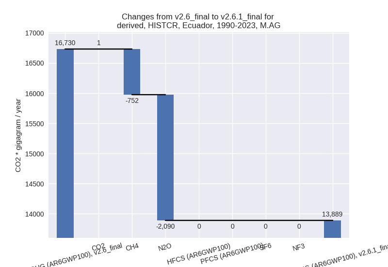
The changes come from the following subsectors:
- 3.A: Total sectoral emissions in 2022 are 7958.63
Gg CO2 / year which is 67.6% of category M.AG emissions. 2023 Emissions
have changed by -30.4% (-3482.89 Gg
CO2 / year). 1990-2023 Emissions have changed by -12.4% (-1442.40 Gg CO2 / year). For 2023
the changes per gas
are:
For 1990-2023 the changes per gas
are:
There is no subsector information available in PRIMAP-hist.
- M.AG.ELV: Total sectoral emissions in 2022 are
3813.91 Gg CO2 / year which is 32.4% of category M.AG emissions. 2023
Emissions have changed by -31.8%
(-1734.88 Gg CO2 / year). 1990-2023 Emissions have changed by -27.2% (-1398.58 Gg CO2 / year). For 2023
the changes per gas
are:
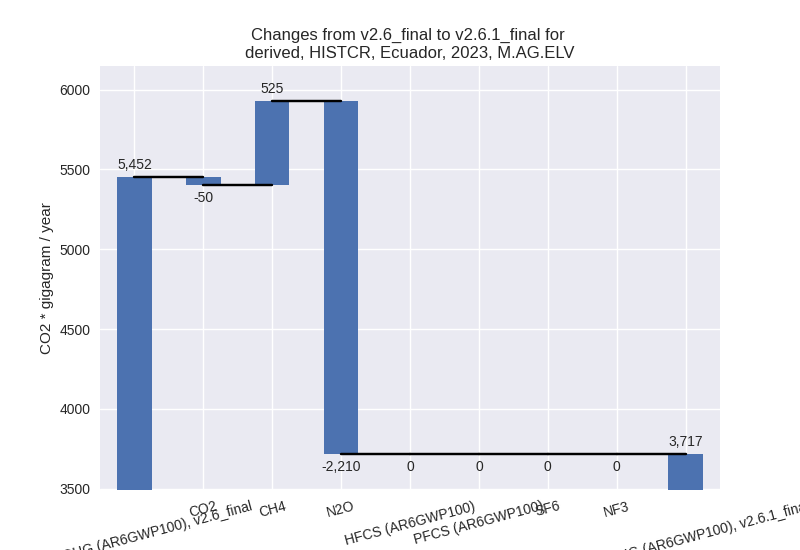
For 1990-2023 the changes per gas
are:
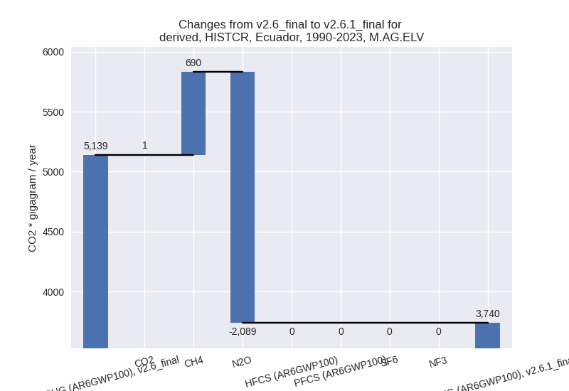
There is no subsector information available in PRIMAP-hist.
- 4: Total sectoral emissions in 2022 are 4780.09 Gg
CO2 / year which is 7.6% of M.0.EL emissions. 2023 Emissions have
changed by 61.8% (1851.78 Gg CO2 /
year). 1990-2023 Emissions have changed by 39.0% (650.98 Gg CO2 / year). For 2023 the
changes per gas
are:
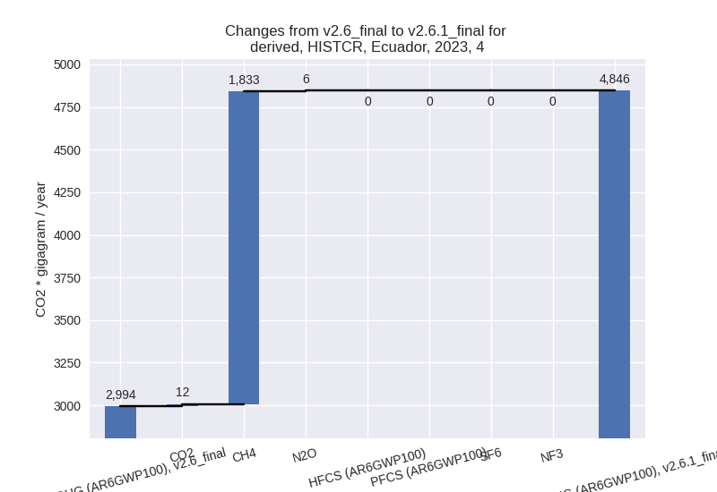
For 1990-2023 the changes per gas
are:
- 5: Total sectoral emissions in 2022 are 0.00 Gg CO2
/ year which is 0.0% of M.0.EL emissions. 2023 Emissions have changed by
-100.0% (-413.96 Gg CO2 / year).
1990-2023 Emissions have changed by -100.0% (-298.35 Gg CO2 / year). For 2023
the changes per gas
are:
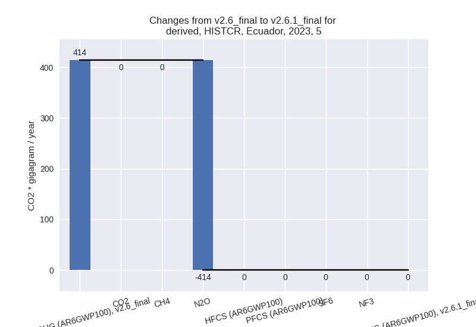
For 1990-2023 the changes per gas
are:
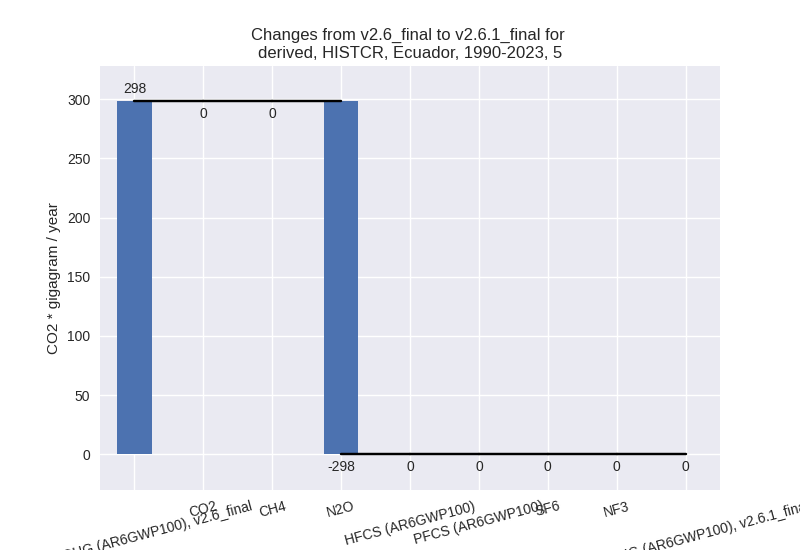
third party scenario (HISTTP):
Most important changes
per time frame
For 2023 the following sector-gas combinations have
the highest absolute impact on national total KyotoGHG (AR6GWP100)
emissions in 2023 (top 5):
- 1: 4, CH4 with -1933.17 Gg CO2 / year (-30.5%)
- 2: 1.B.2, CH4 with 1185.99 Gg CO2 / year (17.1%)
- 3: 3.A, CH4 with -491.46 Gg CO2 / year (-6.7%)
- 4: 1.B.2, CO2 with 450.04 Gg CO2 / year (12.8%)
- 5: M.AG.ELV, N2O with -423.97 Gg CO2 / year (-10.9%)
For 1990-2023 the following sector-gas combinations
have the highest absolute impact on national total KyotoGHG (AR6GWP100)
emissions in 1990-2023 (top 5):
- 1: 4, CH4 with -1500.88 Gg CO2 / year (-30.7%)
- 2: 1.B.2, CH4 with 929.66 Gg CO2 / year (14.1%)
- 3: 1.B.2, CO2 with 60.34 Gg CO2 / year (2.1%)
- 4: 2, CO2 with 55.89 Gg CO2 / year (3.1%)
- 5: M.AG.ELV, N2O with -28.53 Gg CO2 / year (-0.8%)
Changes in the main sectors for aggregate KyotoGHG (AR6GWP100)
are
- 1: Total sectoral emissions in 2022 are 51282.73 Gg
CO2 / year which is 70.7% of M.0.EL emissions. 2023 Emissions have
changed by 3.1% (1642.12 Gg CO2 /
year). 1990-2023 Emissions have changed by 2.7% (988.94 Gg CO2 / year). For 2023 the
changes per gas
are:
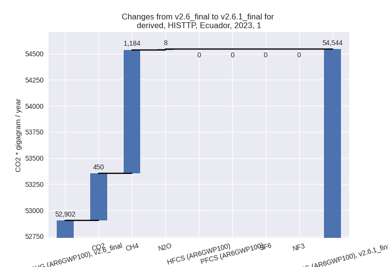
For 1990-2023 the changes per gas
are:
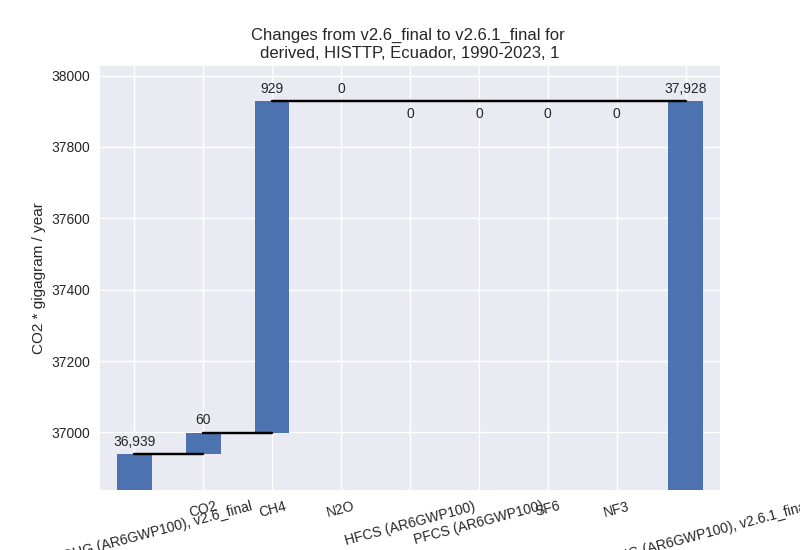
The changes come from the following subsectors:
- 1.A: Total sectoral emissions in 2022 are 39788.03
Gg CO2 / year which is 77.6% of category 1 emissions. 2023 Emissions
have changed by 0.0% (3.24 Gg CO2 /
year). 1990-2023 Emissions have changed by -0.0% (-2.46 Gg CO2 / year).
- 1.B.1: Total sectoral emissions in 2022 are 0.54 Gg
CO2 / year which is 0.0% of category 1 emissions. 2023 Emissions have
changed by inf% (0.54 Gg CO2 /
year). 1990-2023 Emissions have changed by inf% (0.54 Gg CO2 / year). For 2023 the
changes per gas
are:
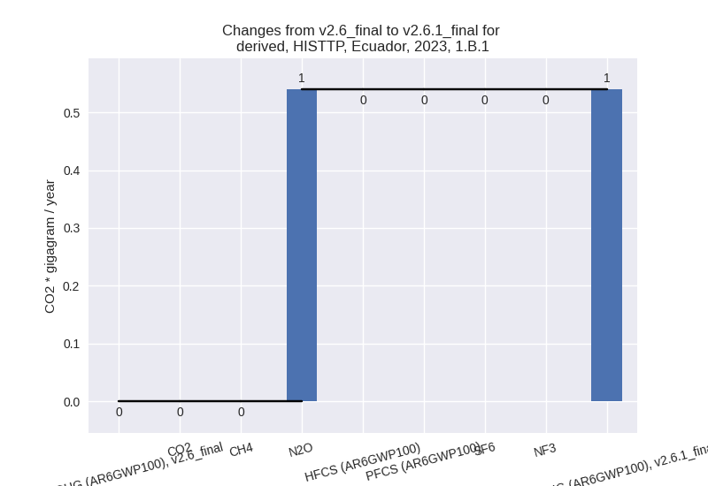
For 1990-2023 the changes per gas
are:
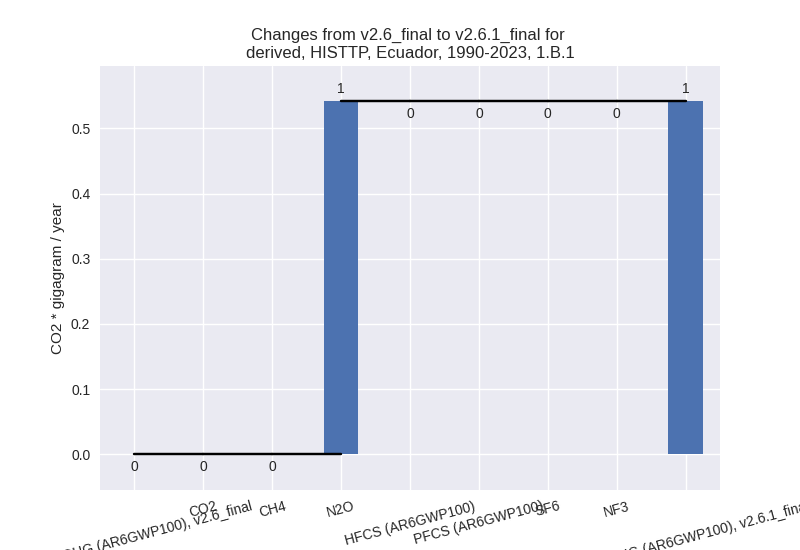
There is no subsector information available in PRIMAP-hist.
- 1.B.2: Total sectoral emissions in 2022 are
11494.16 Gg CO2 / year which is 22.4% of category 1 emissions. 2023
Emissions have changed by 15.6%
(1638.35 Gg CO2 / year). 1990-2023 Emissions have changed by 10.5% (990.85 Gg CO2 / year). For 2023 the
changes per gas
are:
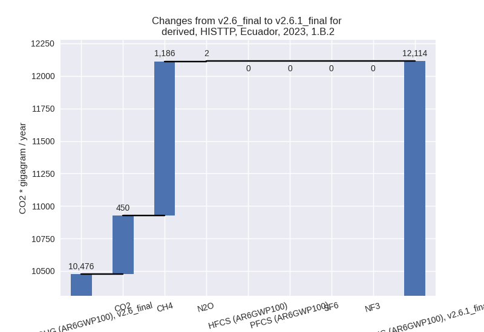
For 1990-2023 the changes per gas
are:
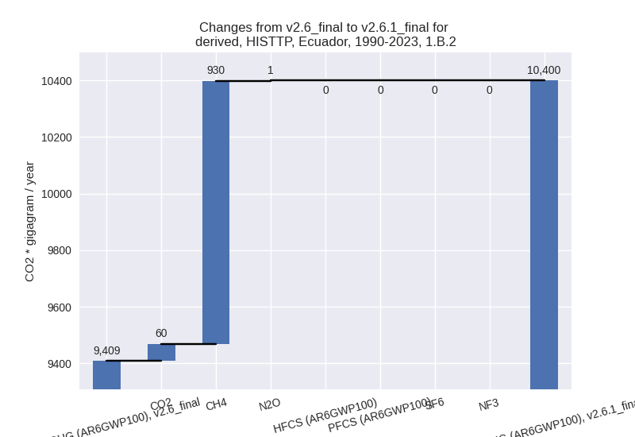
There is no subsector information available in PRIMAP-hist.
- 2: Total sectoral emissions in 2022 are 3233.20 Gg
CO2 / year which is 4.5% of M.0.EL emissions. 2023 Emissions have
changed by 0.9% (28.01 Gg CO2 /
year). 1990-2023 Emissions have changed by 2.6% (55.34 Gg CO2 / year). For 1990-2023
the changes per gas
are:
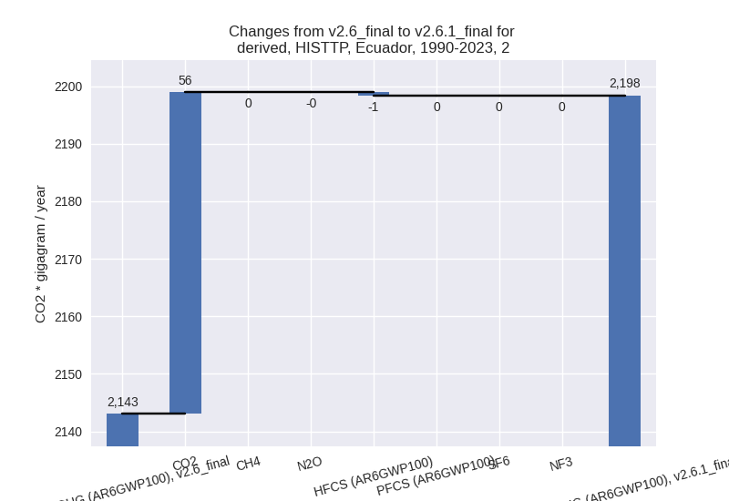
- M.AG: Total sectoral emissions in 2022 are 13075.91
Gg CO2 / year which is 18.0% of M.0.EL emissions. 2023 Emissions have
changed by -8.9% (-1266.91 Gg CO2 /
year). 1990-2023 Emissions have changed by -0.5% (-67.33 Gg CO2 / year). For 2023 the
changes per gas
are:
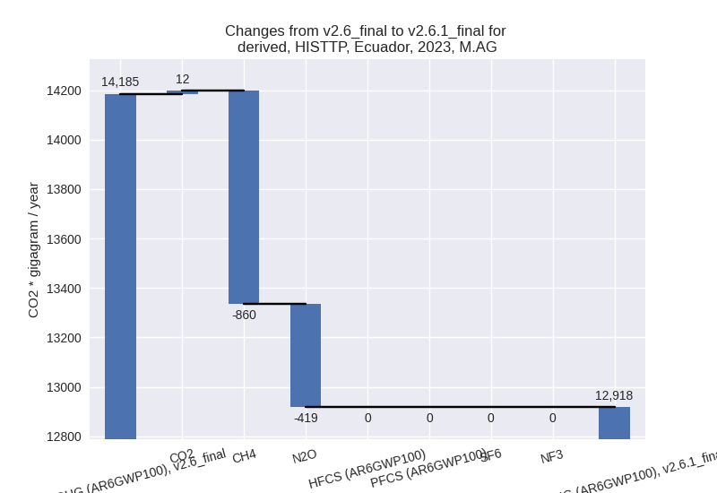
The changes come from the following subsectors:
- 3.A: Total sectoral emissions in 2022 are 7018.66
Gg CO2 / year which is 53.7% of category M.AG emissions. 2023 Emissions
have changed by -6.5% (-486.02 Gg
CO2 / year). 1990-2023 Emissions have changed by -0.3% (-27.05 Gg CO2 / year). For 2023 the
changes per gas
are:
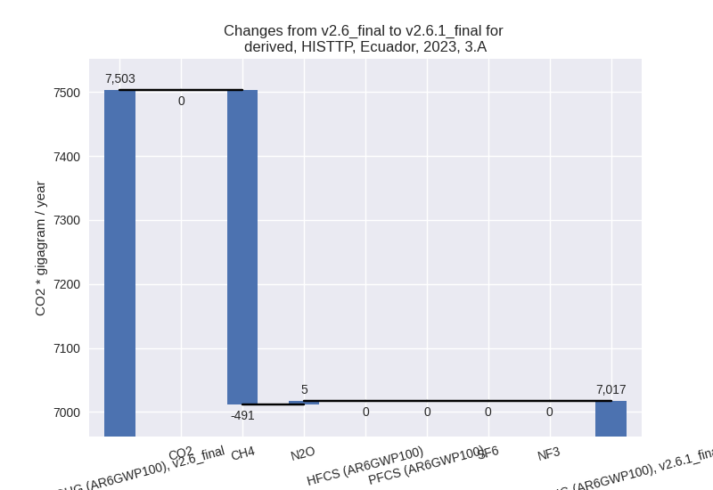
There is no subsector information available in PRIMAP-hist.
- M.AG.ELV: Total sectoral emissions in 2022 are
6057.26 Gg CO2 / year which is 46.3% of category M.AG emissions. 2023
Emissions have changed by -11.7%
(-780.89 Gg CO2 / year). 1990-2023 Emissions have changed by -0.7% (-40.29 Gg CO2 / year). For 2023 the
changes per gas
are:
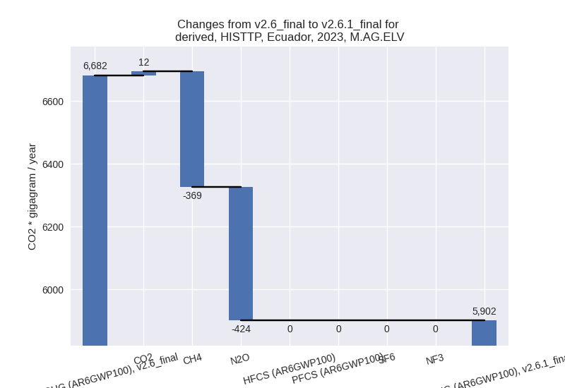
There is no subsector information available in PRIMAP-hist.
- 4: Total sectoral emissions in 2022 are 4544.90 Gg
CO2 / year which is 6.3% of M.0.EL emissions. 2023 Emissions have
changed by -29.5% (-1925.97 Gg CO2 /
year). 1990-2023 Emissions have changed by -29.8% (-1500.38 Gg CO2 / year). For 2023
the changes per gas
are:
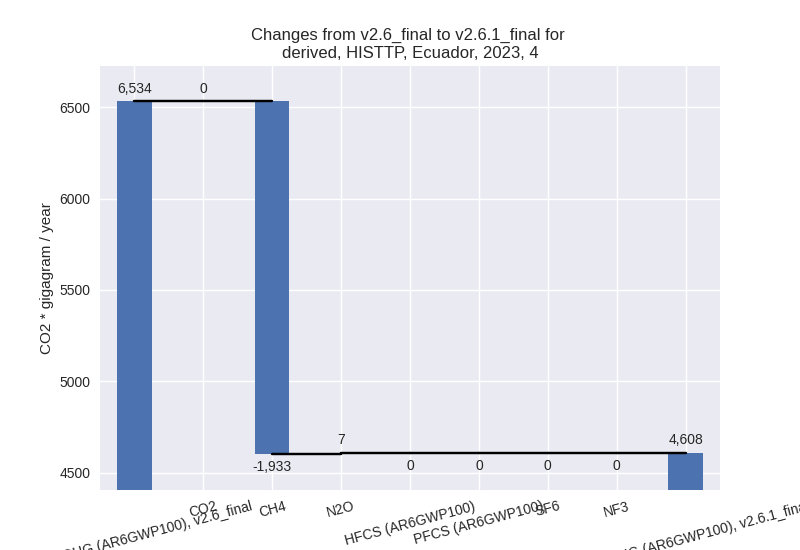
For 1990-2023 the changes per gas
are:
- 5: Total sectoral emissions in 2022 are 362.62 Gg
CO2 / year which is 0.5% of M.0.EL emissions. 2023 Emissions have
changed by -7.1% (-29.19 Gg CO2 /
year). 1990-2023 Emissions have changed by -8.2% (-24.61 Gg CO2 / year). For 2023 the
changes per gas
are:
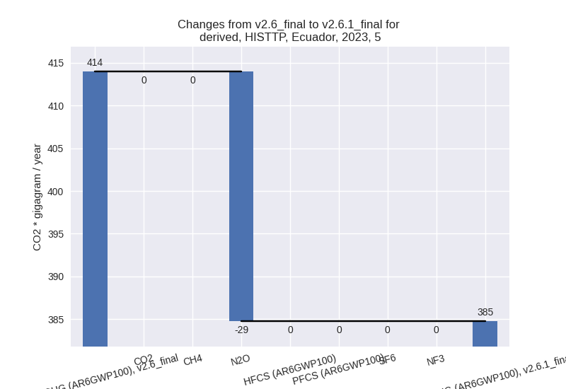
For 1990-2023 the changes per gas
are: